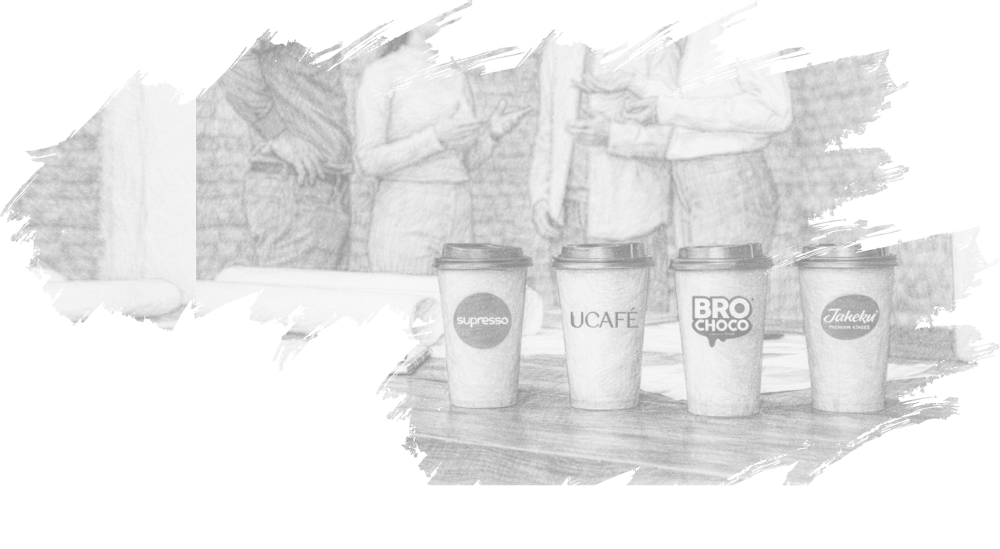
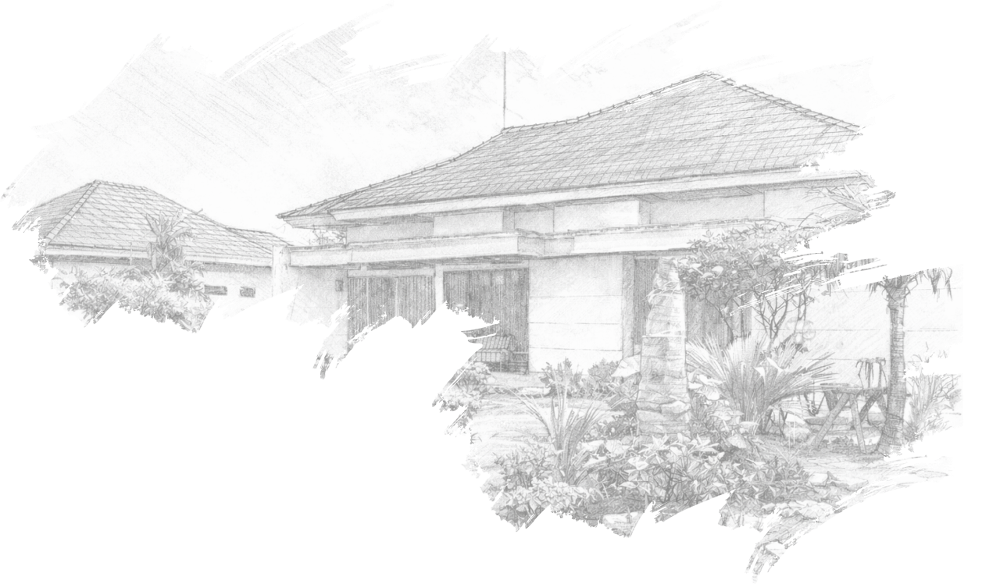
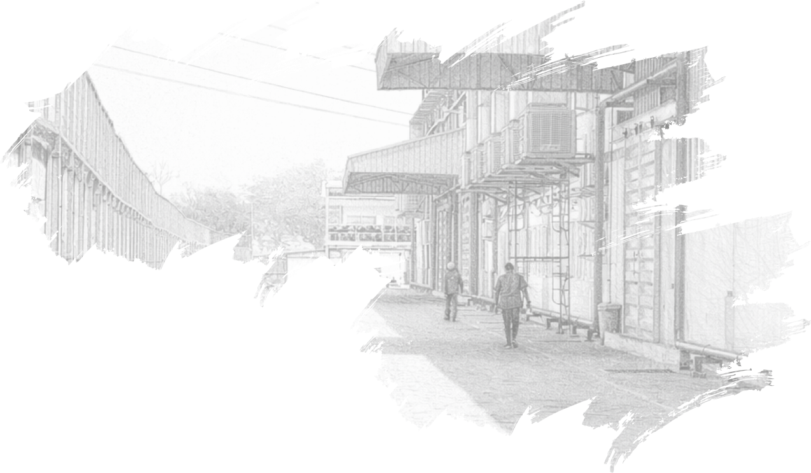
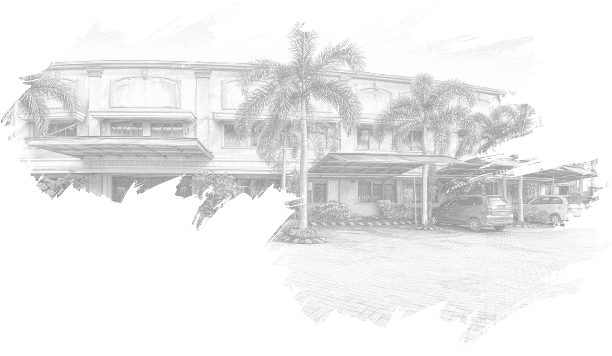
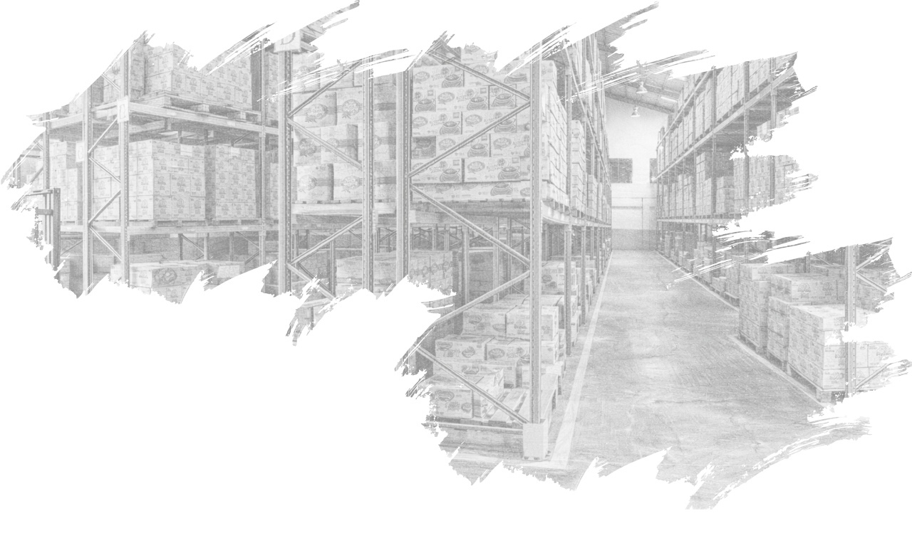
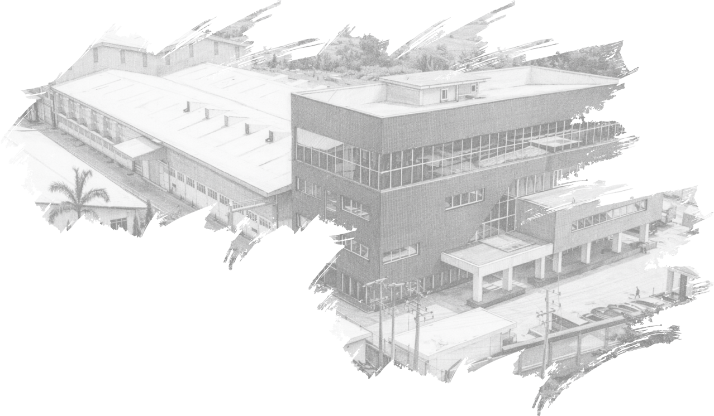
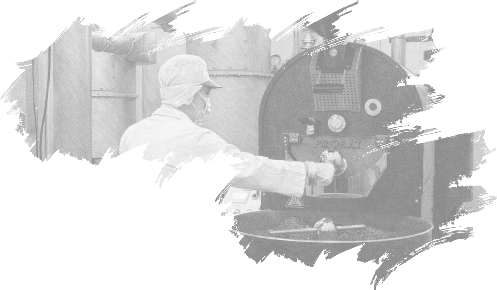
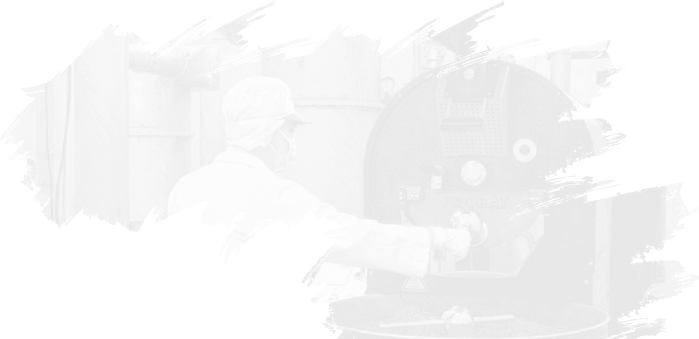
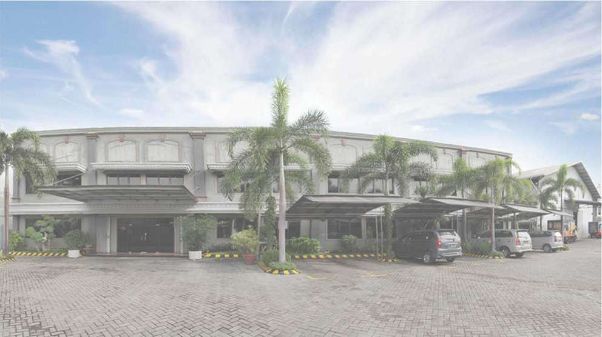
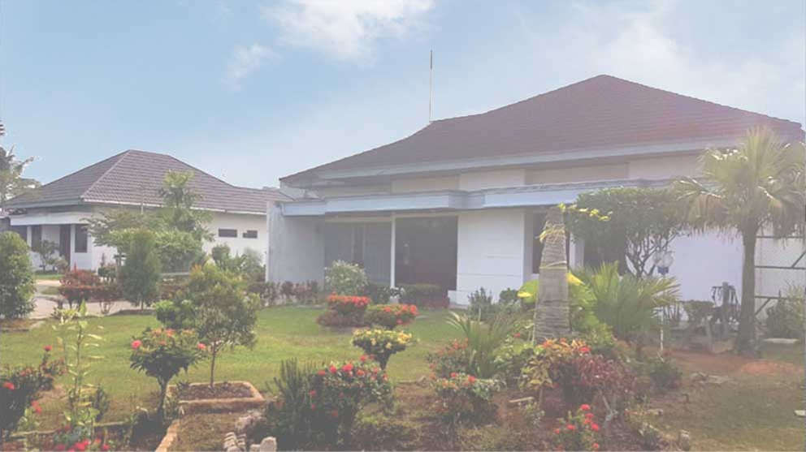

fokus pada konsumen
Kami bekerja lebih untuk memuaskan konsumen-konsumen kami, sekaligus membangun hubungan baik dalam jangka panjang. Kami mengedepankan rasa percaya, kredibilitas dan loyalitas.

KAMI INDRACO - Berdiri sejak 1971, memproduksi dan mendistribusikan kopi, INDRACO terus bergerak maju dengan berekspansi ke beberapa fasilitas manufaktur yang canggih dan juga jalur-jalur distribusi di seluruh Indonesia dan Singapura. Berpengalaman dalam dunia kopi selama lebih dari setengah abad, INDRACO bertekad menghadirkan sebuah pengalaman dan kesan yang kuat untuk setiap langkah perjalanan konsumen kami. Lewat produk, jaringan retail hingga layanan F&B, kreativitas dan inovasi tetap menjadi inti perjalanan kami. Dengan lebih dari 11 brand dan 600 SKU dalam berbagai produk kopi, jahe, dan cokelat, kami terus tumbuh, berinovasi, dan tetap pada jalur tradisi yang diajarkan oleh para pendiri kami, para pelopor industri FMCG dan F&B yang kini maju.

Dari gudang kecil, mimpi besar itu dimulai.
Segalanya berawal dari sebuah gudang sederhana di Riau. Di sana, UD. Intisari berdiri, didorong oleh keyakinan bahwa kerja keras, kualitas, dan ketulusan dapat membawa perubahan. Dari tempat kecil itu, sebuah mimpi besar mulai tumbuh.

Menjejakkan kaki di kota baru.
Enam tahun kemudian, mimpi itu membawa kami ke Surabaya. Dengan membangun pabrik baru dan menyandang nama INDRACO, kami melangkah memasuki babak baru yang penuh semangat dan tantangan. Di kota inilah, identitas kami mulai terbentuk.

Ruang baru untuk bertumbuh.
Seiring meningkatnya kepercayaan dan permintaan, kami membutuhkan rumah yang lebih besar. Perjalanan ini pun berlanjut ke Gresik, ke Pabrik Indraco Driyorejo--tempat di mana inovasi semakin berkembang dan produk kami naik level demi menjawab kebutuhan pasar.

Mendistribusikan produk ke seluruh Indonesia.
Memahami pentingnya koneksi dengan konsumen di seluruh Indonesia, kami mendirikan Asiaterra. Disinilah perjalanan distribusi kami diperkuat, memastikan setiap produk INDRACO hadir dengan mutu terbaik di berbagai daerah.

Membawa Indonesia ke dunia.
Dengan keyakinan yang sama sejak awal, kami melangkah ke kancah internasional melalui Supresso International di Singapura dan Malaysia. Bukan hanya untuk memperkenalkan produk, tetapi untuk membawa cita rasa, kualitas, dan nilai yang kami bangun selama puluhan tahun kepada dunia.

Dengan keyakinan yang sama sejak awal, kami melangkah ke kancah internasional melalui Supresso International di Singapura dan Malaysia. Bukan hanya untuk memperkenalkan produk, tetapi untuk membawa cita rasa, kualitas, dan nilai yang kami bangun selama puluhan tahun kepada dunia.
Menyediakan produk-produk berkelas, berkualitas top dengan harga yang kompetitif, yang sesuai bahkan melebihi apa yang dibutuhkan konsumen.

Menyediakan produk-produk berkelas, berkualitas top dengan harga yang kompetitif, yang sesuai bahkan melebihi apa yang dibutuhkan konsumen.
Kami bekerja lebih untuk memuaskan konsumen-konsumen kami, sekaligus membangun hubungan baik dalam jangka panjang. Kami mengedepankan rasa percaya, kredibilitas dan loyalitas.
Kami bersemangat untuk bekerja sama, menciptakan harmoni dan menyamakan visi. Kami saling mendorong potensi, menyebarkan empati dan menciptakan budaya kerja yang dicintai.
Kami menanamkan mindset tumbuhnya ide-ide baru, bekerja sekuat tenaga dan menjadi lebih baik. Kami proaktif terhadap perubahan-perubahan dan senantiasa menanamkan semangat untuk maju.
Kami menjunjung tinggi nilai-nilai moral dan etika yang berlaku. Kami menanamkan rasa saling percaya dan menghormati dengan pelanggan dan rekan kerja, bersikap transparan, jujur dan menghargai martabat sesama.
Kami mengembangkan kapasitas sebaik mungkin dengan mengoptimalkan sumber daya yang ada, teguh karya demi pencapaian cita-cita. Kami menghadapi setiap tantangan dengan rasa saling percaya.
Menyediakan produk-produk berkelas, berkualitas top dengan harga yang kompetitif, yang sesuai bahkan melebihi apa yang dibutuhkan konsumen.

Driyorejo, Gresik Mfg. Facility
Jl. Semeru No. 133-135 Bambe, Kec. Driyorejo. Gresik 61177 Jawa Timur - Indonesia.
antar saya kesana
Dumai Mfg. Facility
Jl. Pemuda Darat no.11 Kel. Pangkalan Sesai, Dumai Barat 28824 - Riau
antar saya kesana